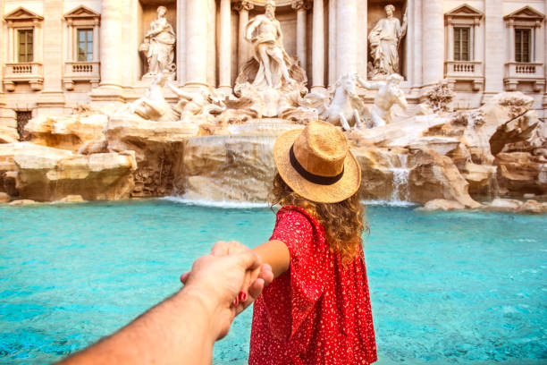

Harikalarla dolu dünya
Gezi Rehberi
Geziye başlamadan önce lütfen derin bir nefes alıp daha sonra verin.
Gezi rotasını kendi deneyimlerimden yola çıkarak yaptım. Umarım beğenirsiniz.
Gezinizin güzel geçmesi dileği ve bolca anı biriktirmeniz dileğiyle.
Hazırsanız başlayalım!
- Öncelikle Madrid'e bir bilet alın.
- Bavulunuz ve biletiniz hazırsa hemen havaalanına gidin.
- Zamanınız varsa havaalanında içecek güzel bir şeyler alıp sevgilinizle gezebilirsiniz.
- Madrid'e indiğinizde nemli ve sıcak havayı yüzünüzde hissedeceksiniz :). Hemen bir taksiye atlayıp şehir merkezine gidin.
- Şehir merkezindeki kamu binasından broşür alıp şehri gezin.
- Barcelona'yı görmeden olmaz. Flixbus adlı otobüs firmasından bilet alıp Barcelona'ya gidin.
- Fazla uzatmadan rotada olan yerleri söyleyeyim. Barcelona'dan Paris'e gidin.
- Monaco'ya uğramayı unutmayın.
- Genoa üzerinden İtalya'ya girdikten sonra Florence'ye gidin.
- Batıya giderek Pisa'ya varın. Sahil yolundan giderek Roma'ya gidin.
- Bana kalırsa Roma, Paris'ten daha romantik.
- Sevgilinizle Roma'da aşkınıza aşk katabilirsiniz...
- Trevi Çeşmesi yani Aşk Çeşmesi'ne gidin.
- Eros sizi orada okula vursun ve sonsuza kadar aşık kalın.
- Batıl inanca inanmıyor olabilirsiniz ama bozuk para atmadan dönmeyin.
- Romantik bir akşam yemeği ile geceye başlayın.
- Yurda mutlu dönün